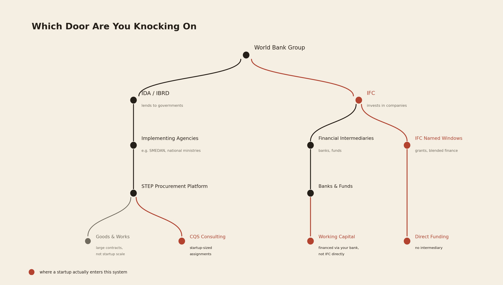
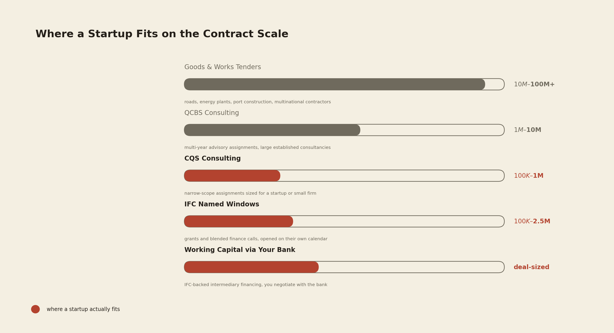

The World Bank Put $26 Billion Into Africa Last Year. Most Founders Have No Idea How to Touch Any of It.
An operator's guide to IDA vs IFC, STEP procurement, CQS consulting, and the pitfalls that cost founders the most time trying to turn development finance into an actual distribution channel.

In fiscal year 2025, the World Bank approved $26.2 billion for Africa across 183 operations, $22.4 billion of it concessional financing through IDA, the Bank's low-income lending arm, with IFC committing a further $11.2 billion on the private-sector side and MIGA adding $1 billion in guarantees. Say that number out loud to a founder building anything in fintech, agritech, health, or digital infrastructure, and you will usually get the same reaction: genuine surprise, followed by the question that actually matters, which is how any of it is supposed to reach a company that isn't a government.
That question has a real answer, and most of the content written about it online does not give one. Search "World Bank tenders for startups" and you will land mostly on subscription aggregators reselling procurement notices that are already free on the Bank's own site, or on generic funding-opportunity blogs that lump the World Bank in with a hundred unrelated grant programs without explaining how the institution itself actually works. Neither tells you the one thing you need to know before you spend a single hour on this: which part of the World Bank you are even trying to reach.
The World Bank Is Five Institutions Wearing One Name
Most people, including most founders, talk about "the World Bank" as if it were one organization with one front door. It is actually five institutions, and for a founder only two of them matter, working in opposite directions from each other.
IDA and IBRD lend to governments. That money funds the things governments build: roads, health systems, digital ID programs, agricultural extension projects, delivered through a national ministry or a designated implementing agency, and procured through the Bank's own e-procurement platform, STEP. A startup does not receive a check from IDA. What a startup can do is win a contract to build a piece of what an IDA-financed government project needs, as a direct supplier, as a consultant, or as a subcontractor sitting underneath a larger prime contractor who won the main award.
IFC works the other way. It is the private-sector arm of the World Bank Group, and it invests directly into companies, funds, and banks, sometimes through equity, sometimes through debt, sometimes through blended finance structures built specifically to make investing in IDA-eligible countries less risky for everyone else at the table. IFC's $11.2 billion across Africa last year increasingly targets exactly the kind of digital, agritech, and financial services businesses this portfolio covers, the same platform economics logic I traced through telecom's own distribution infrastructure story applies here: the institution with the billing relationship, or in this case the capital relationship, holds more leverage than the product built on top of it.

Find out which institution you are actually talking to before you spend a single hour applying anywhere. IDA money moves through governments. IFC money moves into companies. Every wasted month I have watched a founder lose to this system traces back to that one confusion.
Following the Government Money
STEP is the real front door on the government-financed side, and unlike almost everything else written about this topic, it costs nothing to use. The Bank also publishes a plain-language Beginner's Guide for Borrowers directly on worldbank.org, which is a better starting point than any paid aggregator's summary of the same material, and a running feed of open notices sits on the Bank's Procurement Notices page. But the live notices skew heavily toward large infrastructure, road rehabilitation contracts worth tens of millions, solar installation packages, port construction studies, the kind of scale that makes most founders close the tab and assume none of this was ever meant for them.
It wasn't meant for them at that scale. It was meant for them one tier down. Underneath the large goods-and-works tenders sits the Bank's consulting selection framework, and inside that framework is a method called Consultants' Qualifications Selection, or CQS, built specifically for smaller, narrower-scope assignments that a startup or a small specialist consultancy can actually staff and deliver. Founders who only ever look at the headline infrastructure notices never see this tier, because it doesn't show up first in a search, and nothing about the Bank's own website goes out of its way to point a first-time visitor toward it.

Even when a founder finds the right tier, the money rarely arrives in a straight line from Washington. SMEDAN's role in Nigeria's World Bank-financed MSME Competitiveness for Jobs and Economic Transformation program is a useful example of how this actually works in practice: the financing originates with the World Bank, but the program is designed, administered, and disbursed through a national implementing agency. A founder who tries to access that kind of program by emailing the World Bank directly is knocking on a door that was never going to open, because the people who can actually say yes work three organizational layers away from the institution whose name is on the money.
Following the Private-Sector Money
IFC rarely writes a check straight to an early-stage company either, though for a different structural reason than the government side. Most of IFC's capital moves through financial intermediaries, banks, funds, and platforms that IFC has backed, which then extend financing to the businesses IFC itself never touches directly. Stanbic IBTC's partnership with CycleFlow, an IFC-supported supply chain finance platform, shows how this chain actually works: IFC's backing gave a Nigerian bank the infrastructure to offer suppliers financing against approved invoices, and the suppliers who end up benefiting from that capital never negotiate with IFC at all. They negotiate with their bank, and their bank is the one carrying IFC's involvement upstream.
Where IFC does fund companies more directly, it tends to do so through named windows that open and close on their own calendar rather than an open-ended application anyone can submit at any time, listed on ifc.org as each one opens. Grant and blended-capital programs aimed at agritech, digital infrastructure, and SME growth have recently ranged from the low hundreds of thousands of dollars to several million per project, and these named windows are the closest thing to a direct door IFC offers a founder. They are also, based on what I found putting this piece together, the most heavily searched and least clearly explained part of the entire World Bank Group system, buried under a layer of secondary blogs republishing each other's summaries faster than any founder could verify which ones are still actually open.
What I Have Watched Cost Founders the Most Time
The pattern I keep seeing starts with a founder finding a paid aggregator before finding the free source. A whole subscription industry exists to repackage STEP and AfDB procurement notices behind a monthly fee, sometimes fifty dollars, sometimes several hundred, and the notices themselves are sitting in public view on the Bank's own site the entire time. Paying for that convenience once you already understand what you're looking for is a reasonable trade. Paying for it as the first thing you do, before you've spent an hour on the free source, is margin a pre-revenue company is giving away for information it could have found itself.
The second pattern is a timeline mismatch that I have watched founders misjudge the same way I have watched investors misjudge regulatory deadlines elsewhere on this continent, a pattern I traced in detail in how BCEAO's own instruments play out against their stated timelines: they treat a published World Bank tender the way they would treat an accelerator deadline, submit something, and expect an answer within weeks. A government-financed tender realistically runs from prequalification to signed contract over many months, sometimes past a year, and a founder who needs cash in the next quarter is applying to an instrument built on an entirely different clock.
The third pattern is founders picking the wrong fight. A $23 million solar procurement notice either scares a founder off the entire system as obviously not built for a company their size, or pulls them into applying anyway, where they lose to a multinational contractor with two decades of track record behind it. Both reactions miss the actual opening, which sits either underneath that prime contractor's supply chain or inside the CQS tier sized for a company exactly their size, not the headline contract sized for one ten times larger.
How This Looks Different Across the Markets I Cover
This system runs on one global framework, but it does not feel the same from Dakar as it does from Lagos, and it is worth being direct about where my own read is strongest and where it thins out.
Why This Is Worth Building Into Your Plan, Not Treating as a Backup
IDA's twenty-first replenishment, running from July 2025 through June 2028, mobilized close to $100 billion in grants and low-interest financing globally, and Africa is positioned to keep taking the largest regional share it has claimed in every recent cycle. That is not a one-year window that closes if you miss it this quarter. It is a three-year financing cycle that is already live, generating a fresh pipeline of government-financed procurement through 2028 on a schedule that has nothing to do with whatever is happening in venture funding at the same time.
Venture funding moves in cycles. Development finance moves on a replenishment calendar that does not care what venture is doing.
For a founder building anything that touches digital infrastructure, health, agriculture, or financial inclusion, that makes this worth treating as a genuine distribution channel, one you learn to navigate deliberately, the same way you would learn a new customer acquisition channel, rather than something you glance at once when a fundraise stalls and never look at again.
Sources
World Bank Group, Results by Region - fiscal year 2025 regional commitment data
International Development Association (IDA) - Financing overview and IDA21 Replenishment materials
World Bank STEP procurement platform and Beginner's Guide for Borrowers
World Bank / SMEDAN, MSME Competitiveness for Jobs and Economic Transformation project, Nigeria
IFC and Stanbic IBTC, CycleFlow supply chain finance partnership coverage
Operational experience: 12+ years scaling digital products across African fintech, telecom, and SaaS markets